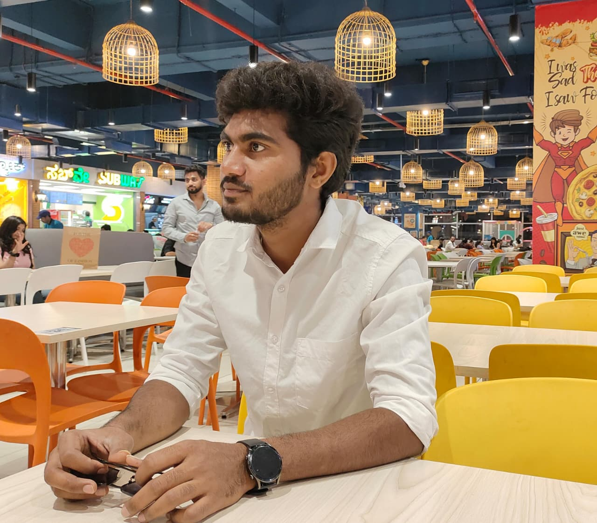

Sandeep Kumar Reddy Malepati
Java Developer
I am Malepati Sandeep Kumar Reddy, an Aspiring Java Developer currently working at Nimblix Technologies. With a strong foundation in Java full-stack Web technologies, I have hands-on experience in Java, HTML, CSS, and MySQL. I am a dedicated problem-solver known for my leadership abilities and passion for building clean, scalable software in collaborative environments.